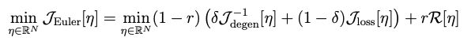
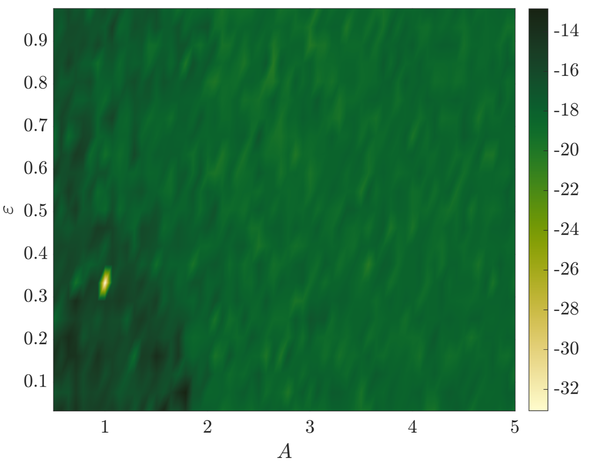
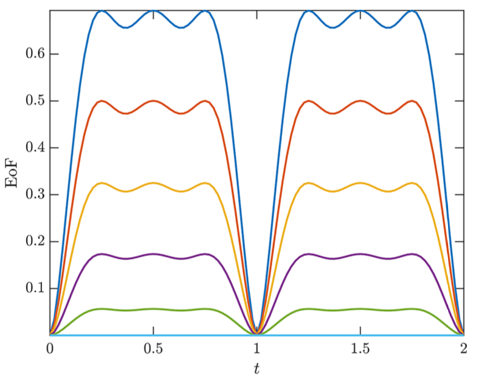
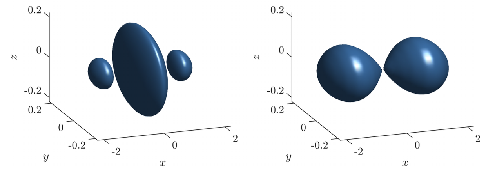
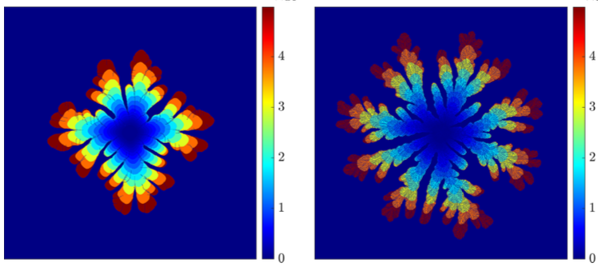
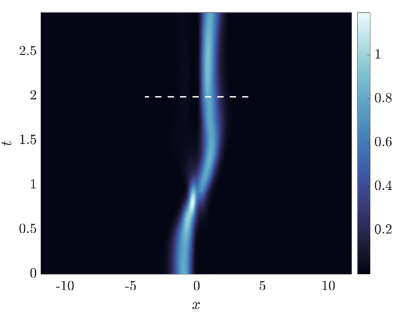
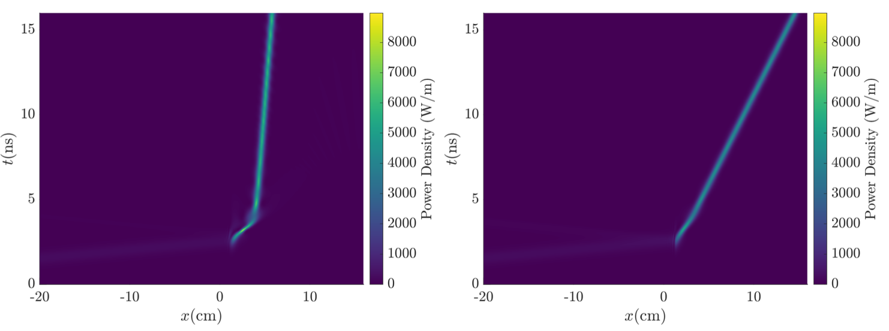
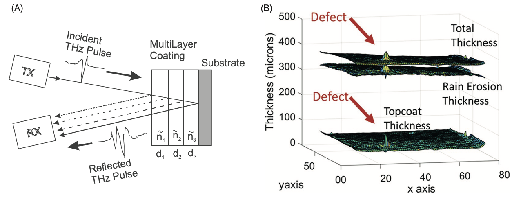
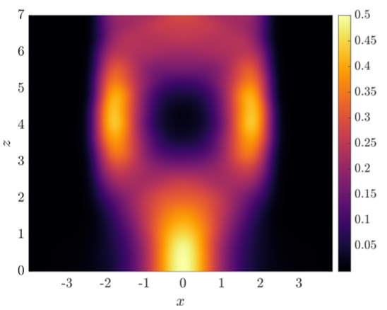
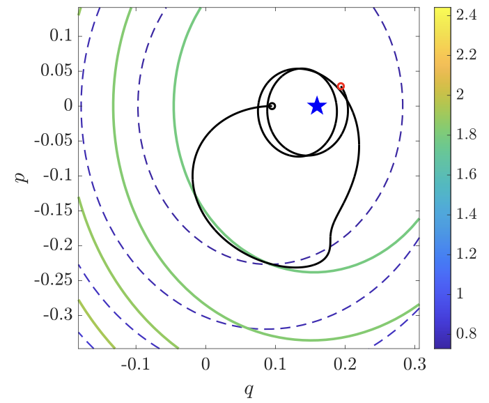

Jimmie Adriazola
Arizona State University
Home
Publications
Teaching
Other Writings
Publications
2025
Machine Learning of Nonlinear Waves: Data-Driven Methods for Computer-Assisted Discovery of Equations, Symmetries, Conservation Laws, and Integrability
J. Adriazola, P.G. Kevrekidis, V. Koukouloyannis, W. Zhu
(submitted)
PDF

Stability of periodic traveling waves for the hydroelastic Whitham equation
M.V. Flamarion, J. Adriazola
Wave Motion
PDF
Computer Assisted Discovery of Integrability via SILO:
Sparse Identification of Lax Operators
J. Adriazola, W. Zhu, P.G. Kevrekidis, A. Aceves
to appear in SIAM Journal on Applied Dynamical Systems
PDF
·
arXiv

Nonconvex optimization strategy for computing convex-roof entanglement
J. Adriazola, K. Roszak
Physical Review A
PDF

2024
Experimentally tractable generation of high-order rogue waves in Bose-Einstein condensates
J. Adriazola, P. G. Kevrekidis
Physical Review E
PDF

Fractal dimension of non-Newtonian Hele-Shaw flow subject to Saffman-Taylor instability
J. Adriazola, B. Gu, L.J. Cummings, L. Kondic
Physical Review E
PDF

2023
Efficient manipulation of Bose–Einstein Condensates in a double-well potential
J. Adriazola, R.H. Goodman, P.G. Kevrekidis
Communications in Nonlinear Science and Numerical Simulation
PDF

Apodizer Design to Efficiently Couple Light into a Fiber Bragg Grating
J. Adriazola, R.H. Goodman
SIAM Journal on Applied Mathematics
PDF

Terahertz nondestructive evaluation of additively manufactured and multilayered structures
A.T. Clark, J. Nemati, C. Bolton, N. Warholak, J. Adriazola, I. Gatley, S. Gatley, J. Federici
Encyclopedia of Condensed Matter Physics (Second Edition)
PDF

2022
Optimal control approach to gradient-index design for beam reshaping
J. Adriazola, R.H. Goodman
Journal of the Optical Society of America A
PDF

Reduction-based strategy for optimal control of Bose-Einstein condensates
J. Adriazola, R.H. Goodman
Physical Review E
PDF
